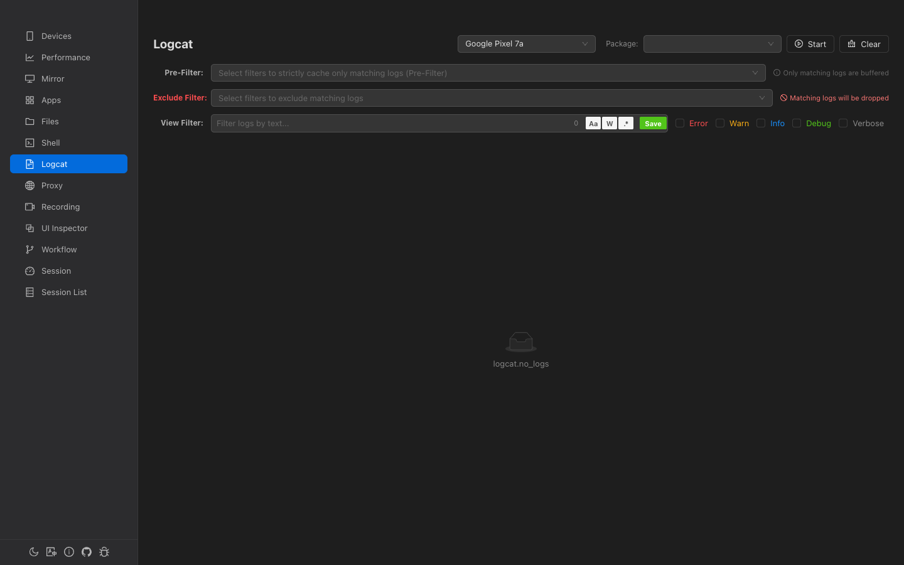
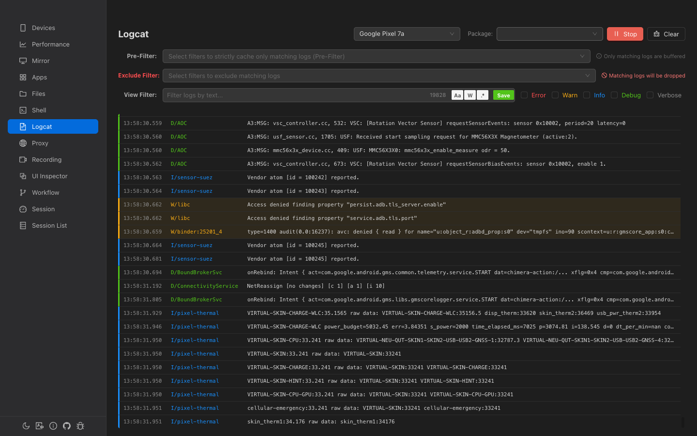
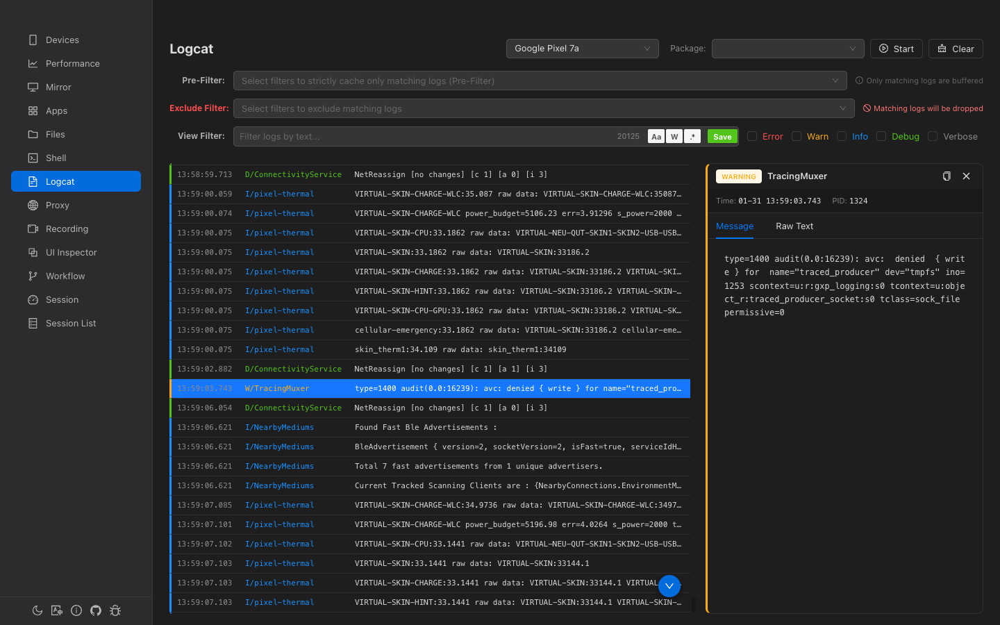

Logcat
Real-time Android log streaming with powerful filtering. Package-scoped capture, regex search, saved filter presets, and color-coded log levels.

Overview
Real-time Streaming
Live log capture with up to 50,000 buffered entries and virtualized rendering.
Three Filter Layers
Pre-filter (include), Exclude filter, and View filter — each serves a different purpose.
Package Filtering
Filter logs by app package name with running status indicator.
Saved Presets
Save filter patterns for quick reuse across sessions.
Header Controls
| Control | Description |
|---|---|
| Device Selector | Select which connected device to capture logs from |
| Package Selector | Searchable dropdown of installed packages. Shows a green "RUNNING" tag if the selected app is active. Disabled during capture. |
| Start/Stop App | Launch or force-stop the selected app (icon toggles based on running state) |
| Start/Stop Logcat | Begin or end log capture. Starting clears all existing logs. |
| Clear | Clear all captured logs from the buffer |
Filter System
Logcat has three independent filter layers, each operating at a different stage:
1. Pre-Filter (Include)
Select saved filter presets from a multi-select dropdown. Matching patterns are combined with | (OR) into a single regex.
2. Exclude Filter
Select saved filter presets to exclude. Any log matching the exclude pattern is permanently dropped before entering the buffer.
3. View Filter (Search)
The main interactive search bar that filters the already-buffered logs in real-time. This is non-destructive — logs are hidden, not deleted.
| Toggle | Shortcut | Description |
|---|---|---|
| Aa | Match Case | Enable case-sensitive matching |
| W | Whole Word | Match whole words only (wraps with \b) |
| .* | Regex | Interpret filter as a regular expression |
| Save | — | Save the current filter pattern as a reusable preset |
Level Filter
Checkbox group for filtering by log level:
- Error — Red
- Warning — Amber
- Info — Blue
- Debug — Green
- Verbose — Gray
When no checkboxes are selected, all levels are shown.
Log Display
Logs are displayed in a dark-themed virtualized list with color-coded levels.
Columns
| Column | Width | Content |
|---|---|---|
| Timestamp | 90px | HH:MM:SS.mmm format |
| Level/Tag | 150px | Format: E/ActivityManager, color-coded by level |
| Message | Flex | Log message text, single line with ellipsis |
Visual Indicators
- Left border — 3px colored stripe matching the log level
- Error/Warning rows — Subtle tinted background for immediate visibility
- Search highlighting — Matching text highlighted with yellow
<mark>tags
Auto-scroll
- Auto-scroll is ON by default when logcat starts
- Scrolling up disables auto-scroll
- Scrolling back to the bottom re-enables it
- A floating "scroll to bottom" button appears when auto-scroll is disabled
Log Detail Panel
Click any log row to select it and open a 400px-wide detail panel on the right.
- Level tag — Color-coded level badge (e.g., ERROR)
- Metadata — Timestamp, PID, package name
- Message tab — Parsed message with word-wrap
- Raw tab — Original raw logcat line
- Copy button — Copy the current tab's content to clipboard
Navigate between logs with ↑ / ↓ arrow keys, Home, and End.
Saved Filter Presets
Click the Save button in the view filter bar to save the current pattern as a named preset. Saved presets appear in both the Pre-Filter and Exclude Filter dropdowns.
- Each preset stores the name, pattern text, and regex mode setting
- Presets are persisted in
localStorage - Delete presets from the dropdown using the trash icon on hover